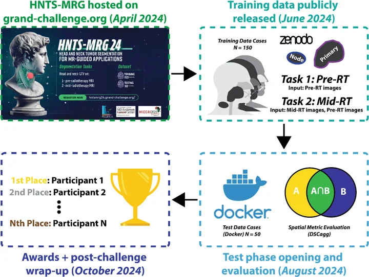
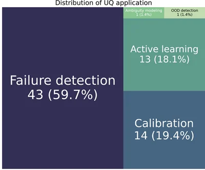
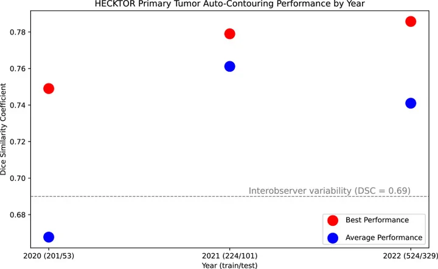
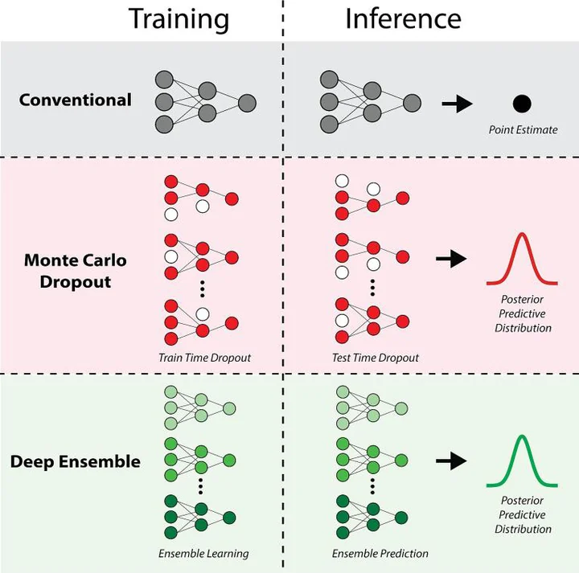
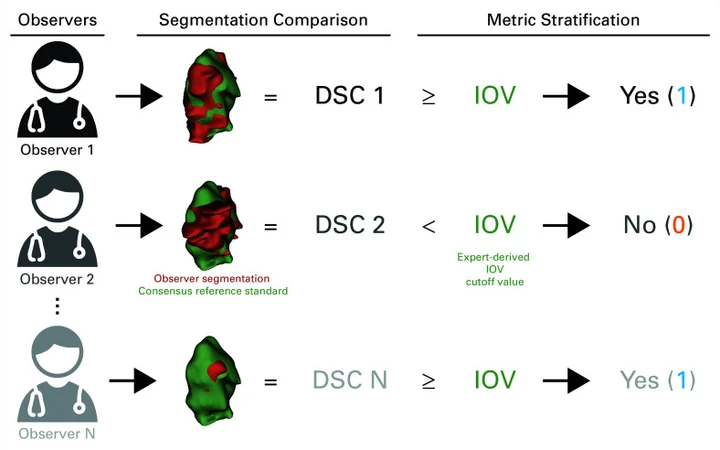
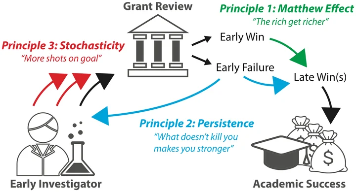
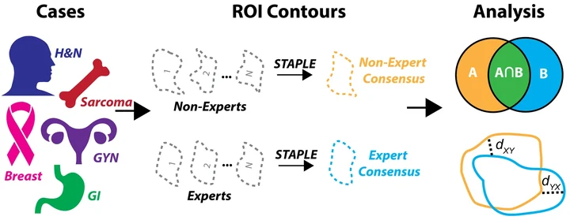
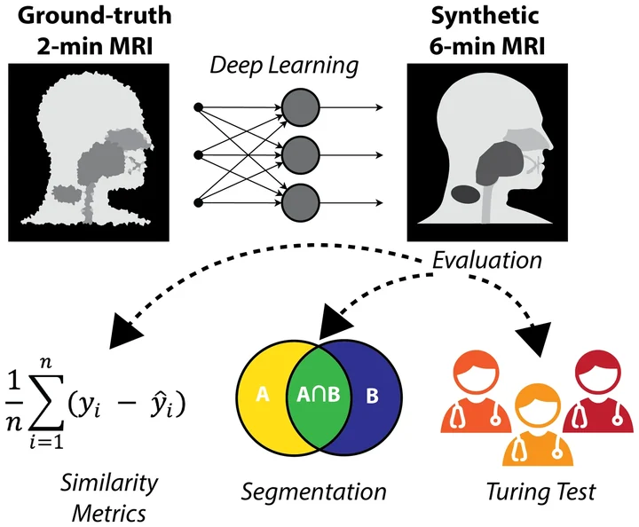
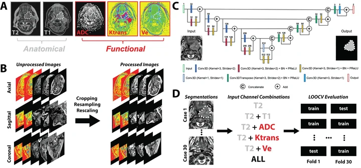
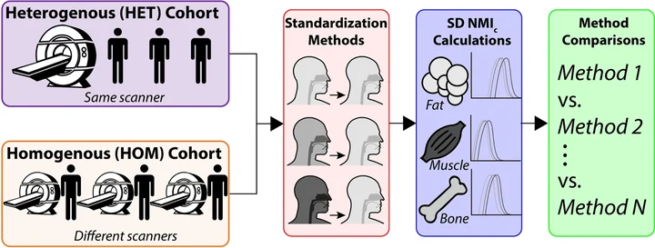

Over my time as a trainee, I have focused on developing a robust skill set to bridge artificial intelligence (AI) and medical imaging. My graduate studies focused on AI in the radiation oncology domain, where I developed predictive analytic tools for head and neck cancer diagnosis and treatment under the guidance of Dr. Clifton Fuller. Serially funded through an NCATS TL1 Fellowship (TL1TR003169) and subsequently through an NIH F31 Fellowship (F31DE031502-01), I have contributed to a variety of projects related to imaging in head and neck cancer radiotherapy. Broadly, I performed research on image processing, automated region-of-interest segmentation, and clinical outcome prediction.
A few key projects I'm particularly proud of are highlighted below, but you can find a full up to date list of my publications on Google Scholar. You can also check out my full PhD dissertation (and defense recording) on Figshare.
I plan to pursue a career as a clinician-scientist with a research emphasis on applying AI to personalized/precision oncology. I am now a resident in the joint UTHealth Houston/MD Anderson Cancer Center program (a preliminary year in internal medicine, followed by radiation oncology), with the goal of performing clinical trials based on AI-centric clinical decision support tools as a path towards mentored and eventual independent investigator status. While my PhD training has granted me technical informatics domain knowledge and mentorship, I believe a crucial yet often under-valued aspect of clinical translation of these technologies is the underlying ethical considerations for physician and patient end-users. Therefore, I pursued a post-doctoral opportunity through the NIH Image Guided Cancer Therapy T32 program to explore these topics with sufficient rigor so that I may successfully lead the ethical and equitable translation of image-guided AI technologies to the clinic.
Key Publications
The following are brief highlights of some of the research papers that I'm particularly proud of. Please feel free to check out the linked publications for more info. I make a conscious effort to publicly release my work (open-access).
-

-

Uncertainty quantification
Artificial intelligence uncertainty quantification in radiotherapy applications – A scoping review
-

-

Uncertainty quantification
Harnessing uncertainty in radiotherapy auto-segmentation quality assurance
-

-

-

-

Low-quality to high-quality MRI generation
Deep-learning-based generation of synthetic 6-minute MRI from 2-minute MRI for use in head and neck cancer radiotherapy
-

Multiparametric MRI automated tumor segmentation
Evaluation of deep learning-based multiparametric MRI oropharyngeal primary tumor auto-segmentation and investigation of input channel effects: Results from a prospective imaging registry
-

MRI intensity standardization
Intensity standardization methods in magnetic resonance imaging of head and neck cancer
Figures for the 2024–2025 open-access papers are from the published articles (CC BY 4.0, resized or cropped), retrieved from PubMed Central, NIH National Library of Medicine.
Talks & Media
A few invited talks and other places I've shared my work. A more complete list is in my CV.
Selected talks
-
Crowdsourcing Tumor Auto-Contouring Solutions for MR-Guided Radiotherapy: The HNTS-MRG 2024 Challenge
-
Data science competitions as a pathway to innovative AI approaches in radiation oncology
-
Evolving horizons in radiotherapy auto-contouring: Insights from hosting an international data science competition
-
Are Non-Experts Comparable to Experts?
-
Multiparametric MRI Artificial Intelligence Pipeline for Oropharyngeal Cancer Radiotherapy Treatment Guidance
-
Combining Tumor Segmentation Masks with PET/CT Images and Clinical Data in a Deep Learning Framework for Improved Prognostic Prediction in Head and Neck Squamous Cell Carcinoma
-
Artificial Intelligence in Oncology